Last Updated: October 17 2026
My debut album, Silver Shadow, was not the product of a fully funded band session. It was a time-consuming project, chipped away at over the course of several months—possibly years, depending on how generously you define “making an album.” It was a work in progress I invested myself in whenever I had the time.
By this point, I’d become embarrassed to even play the 2024 Executable Demo. So I decided to build on those ideas, sort the good from the bad, and make something I could actually be proud of—and enjoy listening to myself.
It’s difficult to pin down exactly when I started recording, but it was roughly July 2025, shortly after I graduated from audio school. I began recording custom drum samples from my dad’s vintage drum kit, with the intention of sequencing them together later.
The process dragged on for several days. Editing the samples was a pain in the ass, but this was the earliest confirmed start of the recording process.
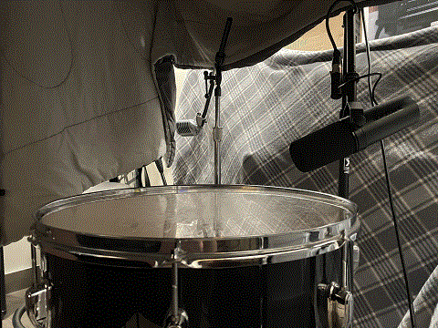 Figure 1. Tom Sampling |
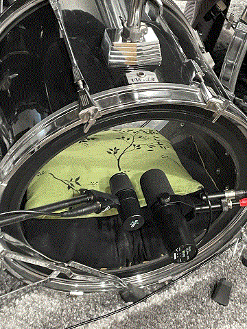 Figure 2. Kick Sampling |
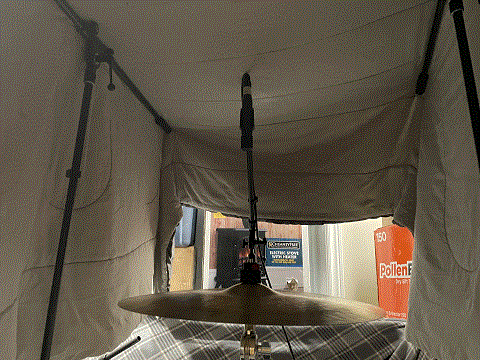 Figure 3. Crash Sampling |
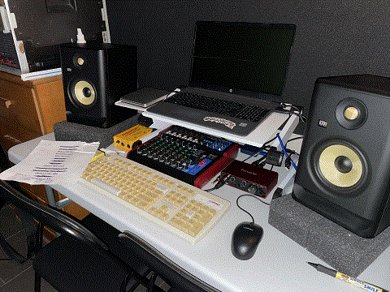 Figure 4. Desktop |
For the rest of 2025, only three songs had been tracked: “Cat Scratch” and two others that remain untitled.
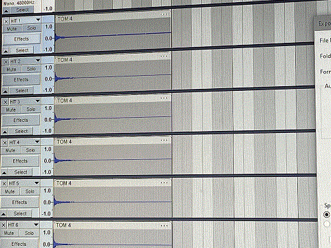
The start of 2026 was incredibly unproductive, and the project mostly sat still until May. Then I started tracking more songs, many of which are still untitled.
Around this time, I discovered the magic of the Zoom 9030, heavily inspired by Trent Reznor’s work on The Downward Spiral and Marilyn Manson’s Antichrist Superstar.
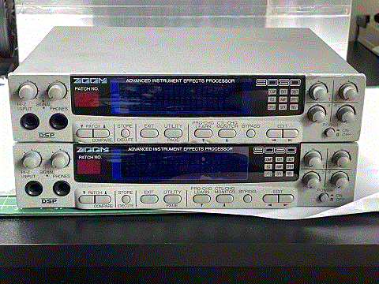 Figure 6. Zoom 9030 |
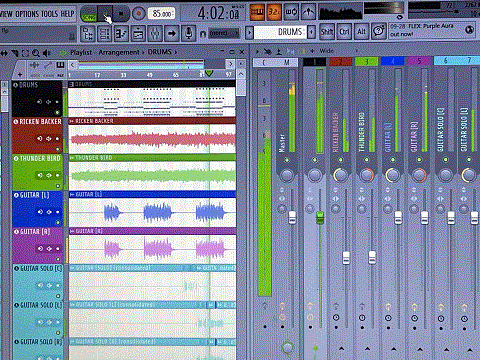 Figure 7. Tracking Session (Corrupted) |
I also started designing software to go along with the record. Many of the concepts were sketched out around this time, drawing inspiration from real-life computer viruses like SMASH, MARBURG, CODE RED, and MELTINGSCREEN, mixed with a few of my own creations.
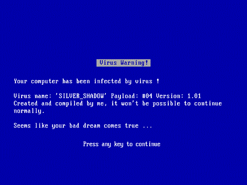 Figure 8. SMASH |
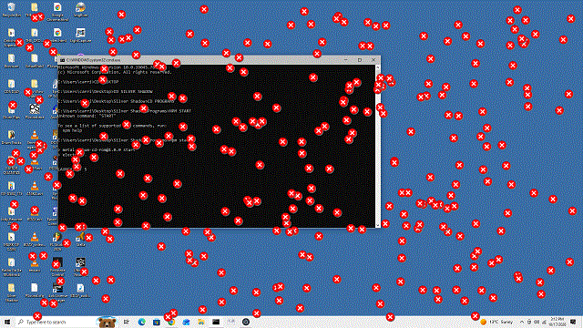 Figure 9. MARBURG |
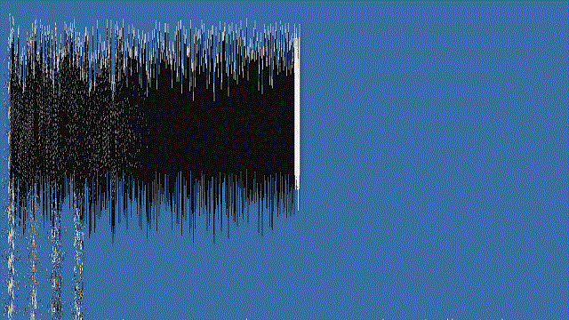 Figure 10. MELTINGSCREEN |
At this point, the project was officially in motion. The software will be designed to trigger automatically whenever the CD is inserted, much like old CD-ROM and cereal-box games did back then. It’s meant to add a layer of instability and unpredictability that suits the album’s content. The whole CD is meant to feel alive and possessed, as if anything you play it in could act erratically and flip the fuck out.
On June 9, a major motherfuckin’ thunderstorm tore through Winnipeg and damaged the main basement studio at my dad’s house. The gear was unharmed, but the drums got wet and suffered minimal damage. The studio, however, had to be redone.
This was a project we’d intended to take on for a while, but never knew when to start. Since a major storm had now made the decision for us, this seemed like our chance to get it done.
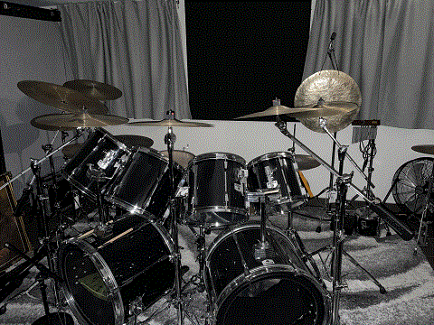 Figure 11. Live Room / Drum Kit |
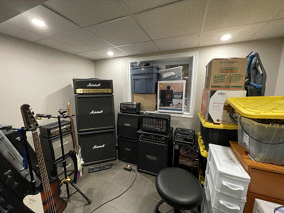 Figure 12. Control Room |
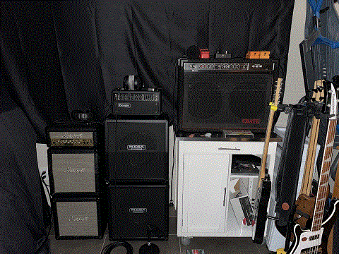 Figure 13. Amps & Shit |
The gear went into storage, and the basement studio was off limits. A large portion of the record would have to be tracked in my bedroom at my dad’s or the home office at my mom’s.
The plan was to track everything with these primitive setups using direct injection, then take the tracks into the rebuilt studio and abuse the living shit out of them.
On July 1, 2026, silvershadowband.com officially launched on the World Wide Web.
By then, the name had more or less cemented itself onto the internet, along with some of my dad’s older projects, including Doomented and Scarred By Anger.
This was also when I started collecting vintage camcorders: a Panasonic PV-L352D-K, a Sony CCD-TR917, and the Sony DCR-HC28 I already owned. I slowly developed ambitions to shoot music videos entirely on these cameras, using their 480i look alongside my harsh graphical effects.
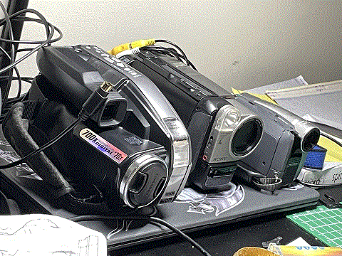
Not much changed. The recording continued, and the studio reconstruction still hadn’t started. It had been delayed by the inconvenience of dealing with an insurance company, as well as reconstruction on my sister’s recently moved-into home, whose basement had also suffered water damage—not from the storm.
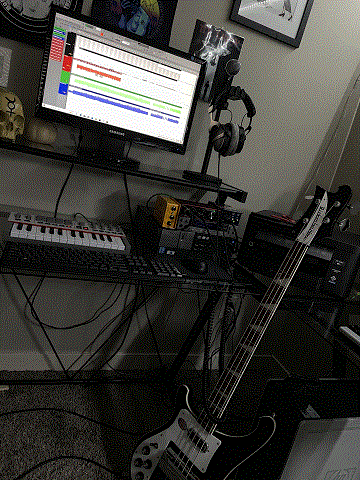 Figure 15. Temporary Recording Space 01 |
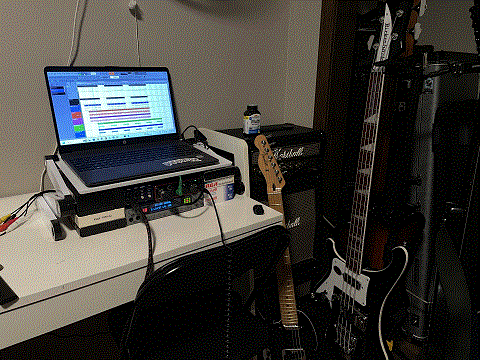 Figure 16. Temporary Recording Space 02 |
I should mention that it wasn’t uncommon for me to be completely stoned during these sessions. I felt it mellowed me out and stopped me from overthinking the performances. I needed some amount of imperfection to fit an album this fucked up.
Halloween is approaching. Around thirteen songs are now in the making, and the vision for the album is becoming clearer.
This article will receive more updates as the making of Silver Shadow continues.
To Be Continued...